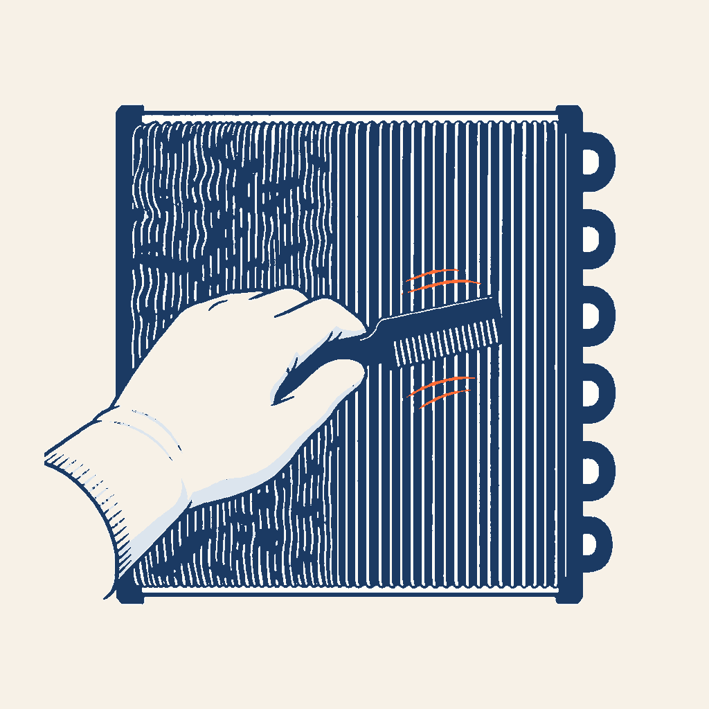

0,95×
HABILITATION FLUIDES A1/A2 · FICHE G7B
Condenseur
voir la cause avant la panne
Grisez la batterie, coupez la ventilation et regardez la pression de condensation réagir. Puis installez, réglez, vérifiez et tracez.
24 écrans · 5 contrôles · environ 9 minutes

Garde-fou : les réactions sont qualitatives. Une valeur ou un réglage réel se prend sur la notice du matériel et se vérifie avec les conditions de fonctionnement.